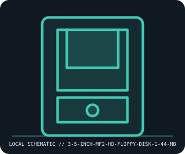

[ REMOVABLE MEDIA // INDIVIDUAL RECORD ]
3.5-inch MF2-HD Floppy Disk (1.44 MB)
3.5-inch double-sided, high-density flexible disk format standardized for PC-era use. This entry describes the identified medium or reader, not a bundled drive/media pair; exact capacity and compatibility are model- and host-dependent.

IDENTIFICATION: Record the full label, manufacturer part number, revision/date code, format markings, and packaging. Product-family names alone do not identify capacity generation or supported drive.
Format and compatibility
| Catalog subcategory | Magnetic removable cartridges |
|---|---|
| Catalog identity | 3.5-inch MF2-HD Floppy Disk (1.44 MB) |
| Format / era | 3.5-inch double-sided, high-density flexible disk format standardized for PC-era use |
| Media/device distinction | This record is the removable medium only; the compatible drive is separate and not included. |
| Capacity / interface | 90 mm flexible disk; 80 tracks per side, 18 sectors per track, 512 bytes per sector; 1,474,560 bytes formatted (commonly called 1.44 MB). The medium is a diskette, not a drive. |
| Compatibility | Requires a 3.5-inch HD-capable 1.44 MB drive and matching controller/format. A drive marked 720 KB may read/write double-density media but is not guaranteed to handle HD media; do not treat 2.88 MB ED support as universal. |
| Variant caveat | The common DOS/FAT 1.44 MB layout is distinct from other 90 mm formats and filesystem layouts. Labels and shells may look alike; inspect the HD-density aperture and actual recorded format. Capacity uses decimal/legacy naming conventions. |
Media care and preservation
Keep the shutter closed; avoid touching the disk surface, dust, smoke, magnetic fields, heat, and pressure. Store vertically in a clean sleeve at stable cool conditions. Do not use a moldy, warped, or shedding disk in a valuable drive; image with write protection and verify checksums.
- Preserve original packaging, labels, and acquisition/context notes; photograph both sides and record any write-protect state before use.
- Keep valuable contents in at least two independently verified copies on separate storage. Record a checksum and test a restore; removable media alone is not a preservation plan.
Model and version caveats
The common DOS/FAT 1.44 MB layout is distinct from other 90 mm formats and filesystem layouts. Labels and shells may look alike; inspect the HD-density aperture and actual recorded format. Capacity uses decimal/legacy naming conventions.
Compatibility statements are limited to the named format/model and published host support. Check manufacturer manual, firmware, regional SKU, and media generation before inserting or writing. A similar connector or cartridge shell is not proof of compatibility.
Sources & further reading
- ISO — ISO 9529, 90 mm flexible disk cartridgesStandardization reference for 90 mm flexible-disk interchange; consult the edition for the exact format profile.
- IBM PC AT Technical ReferenceHistorical primary documentation for IBM PC/AT high-density floppy operation and supported drive formats.
Sources identify the relevant standard, manufacturer, or product family. Where an archived SKU-specific datasheet is unavailable, the exact label/manual and supported host list take precedence over family-level marketing claims.